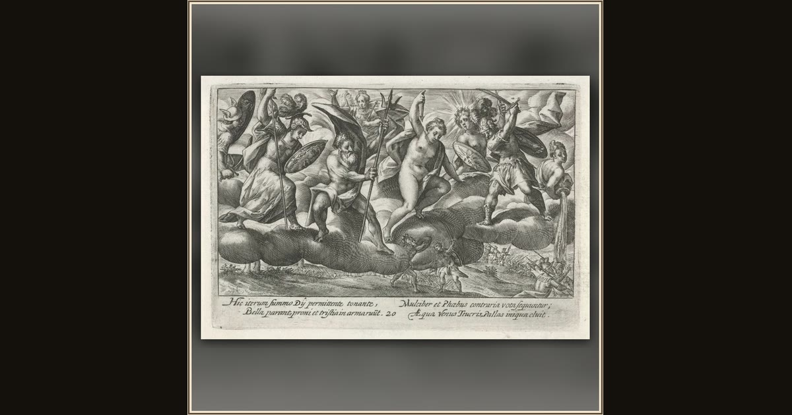

De goden bevechten elkaar / Speculum Heroicum Homeri
Crispijn van de Passe (I) · 1613 · rijksmuseum
Gods armed with spears, bow and sword stand on clouds above the battlefield after Zeus lets them join the war, as Poseidon, Apollo, Athena, Ares and the others pair off (20.67–74). Explore its place in Homer's Iliad, Book XX, line 67.